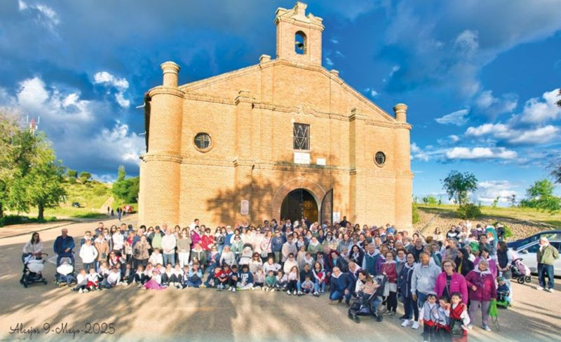

Fiestas y tradiciones
El año festivo de Alaejos, mes a mes: qué se celebra, desde cuándo consta y qué cuenta la tradición.
En esta página (12 apartados · 17 min de lectura)
- Un calendario repartido a lo largo de todo el año
- Otoño e invierno: de Todos los Santos a San Antón
- Cuaresma y Semana Santa
- Mayo: el mayo, la romería del día 10 y San Isidro
- Verano: siega, cabañuelas, Mariseca y alaejanos ausentes
- Septiembre: las fiestas de la Casita
- Vino y bodegas: la fama que llegó a la Corte
- Cabañuelas: doce días de agosto para adivinar el año
- Música y danza: de las chirimías a la charambita
- Lo que se ha perdido, y lo que ha vuelto
- Cronología
- Para seguir leyendo
Un calendario repartido a lo largo de todo el año
Quien piense en las fiestas de Alaejos pensará en septiembre, en la Virgen de la Casita y en los encierros. Pero el calendario alaejano está repartido a lo largo de todo el año. Esta página recorre ese calendario estación por estación. Las fiestas con más historia tienen página propia: la Semana Santa, las fiestas de la Virgen de la Casita, los toros y los quintos.
Le proponemos leerla con una advertencia, la misma que hacemos en el resto del archivo. Una cosa es lo que está documentado (en cuentas del concejo, libros de cofradía, programas impresos o artículos con fuentes) y otra lo que cuenta la tradición. Ambas cosas valen, pero no son lo mismo. Casi todo lo que sabemos del pasado festivo de Alaejos procede de los artículos publicados en los programas de fiestas desde 1954, reunidos en la Biblioteca de los programas. Son fuentes valiosas, pero muchas veces un dato aparece en un solo artículo. Cuando es así, lo decimos. Lo que aún no está claro va en recuadros «En estudio».
| Fecha | Fiesta o costumbre | Lo esencial | Qué sabemos |
|---|---|---|---|
| 1 de noviembre | Todos los Santos | Toque de difuntos desde las tres de la tarde hasta las siete de la mañana | Descrito en 2025; no consta si sigue |
| Víspera de Santa Bárbara (3 de diciembre) | Toque a rau | Toque propio de esa víspera | Descrito en 2025 |
| 13 a 25 de diciembre | Cabañuelas de Santa Lucía | Pronóstico del tiempo del año siguiente | Tradición oral, una fuente |
| 31 de diciembre | Fiesta de los Quintos | Aguinaldo por las calles y hoguera; días después, repicada de campanas | Viva |
| 5 y 6 de enero | Reyes de los quintos | Misa, hoguera pequeña a la patrona y baile para el pueblo | Descrito en 1988; vigencia sin confirmar |
| 17 de enero | San Antón | Bendición de animales y dejada de paja al amanecer: se tira paja | Viva; testimonio local, sentido del rito en estudio |
| 5 de febrero | Las Águedas | Solo consta la fecha | Fuente única (Wikipedia) |
| Dos jueves antes del domingo de Carnaval | Jueves de Compadres y de Comadres | Merienda en el campo; un día invitan los mozos y otro las mozas | Viva |
| Carnaval | Cristo de la Caridad | Misa y procesión alrededor de la Plaza Mayor | Viva; hay discrepancia sobre el día |
| Viernes de Cuaresma | Jesús Nazareno | Cultos en Santa María, Misa de las mujeres y Besapié | Viva (programa de 2025) |
| Semana Santa | Nueve cofradías | Vía Crucis, vino del Cristo de la Salud, Pasión, Santo Entierro, Silencio, Encuentro | Viva (2014 y 2025) |
| 1 de mayo | El mayo | Los quintos levantan un álamo en la Plaza Mayor | Viva |
| 10 de mayo | Romería de la Casita | Aniversario de la aparición: ofrenda, torta, procesión alrededor de la ermita | Viva |
| 15 de mayo | San Isidro | Bendición de los campos y merienda en los pinares con empanada | Viva |
| Noche de San Juan | Hogueras en los melonares | Para ahuyentar la melera | Costumbre del pasado |
| Julio (según Wikipedia) | Fiesta de la Siega | Recreación de una jornada de trabajo en el campo | Viva; fecha de fuente única |
| 1 a 12 de agosto | Cabañuelas de agosto | Cada día anuncia el tiempo de un mes | Tradición oral, una fuente |
| 14 de agosto (víspera del 15) | Colocación y pregón de la Mariseca | Se coloca la Mariseca; banderas de las peñas en el balcón del Ayuntamiento | Viva (testimonio local y programa de 2026); qué es la Mariseca, en estudio |
| Un sábado de agosto | Día del Alaejano Ausente | Misa en la ermita, capea y merienda | Viva |
| 31 de agosto a 8 de septiembre | Novena de la patrona | Cultos en la ermita | Viva |
| Finales de agosto a 10 de septiembre | Fiestas Patronales | Pregón y reinas, peñas, encierros, vísperas de los pastores, Día de la Patrona, retirada de la Mariseca | Viva |
Otoño e invierno: de Todos los Santos a San Antón
El calendario de esta web empieza en enero, pero el año festivo de Alaejos empezaba antes. El inventario de los toques de campana publicado en 2025 recoge un toque de Todos los Santos que duraba toda la noche, desde las tres de la tarde hasta las siete de la mañana, y un toque particular, a rau, para la víspera de Santa Bárbara (Rubio Martínez, Rapado Rodríguez y Rubio Corrales, programa de 2025). Diciembre era también tiempo de cabañuelas, las de Santa Lucía, de las que hablamos más abajo, y de matanza. De la matanza solo sabemos de forma indirecta que daba trabajo a mondongueras y morcilleras y que obligaba a ir una y otra vez a por agua al Caño (véase Oficios, agua y vida diaria).
La Nochevieja es de los quintos: piden el aguinaldo por las calles, encienden la hoguera y, días después, repican las campanas. Su año, que sigue con la fiesta de Reyes y termina con el álamo de mayo, se cuenta en Los quintos.
El 17 de enero, San Antón, se bendicen los animales y, antes de que amanezca, se mantiene la costumbre de la dejada de paja (véase Fiestas y tradiciones). Según el testimonio de un vecino recogido por este archivo, lo que se hace es tirar la paja. Ninguna fuente publicada lo describe. Es una fiesta antigua. En el siglo XVIII figuraba entre las fiestas menores de la villa, y en 1738 el concejo prohibió las reuniones a la puerta del Pozo ese día (Ojeda Nieto, programa de 1995). Wikipedia añade las Águedas, el 5 de febrero, pero no da ningún detalle, y ninguna otra fuente que conozcamos las menciona (Wikipedia).
Antes del Carnaval llegan los Jueves de Compadres y de Comadres, los dos jueves anteriores al domingo de Carnaval. Las cuadrillas salen al campo a merendar: un día invitan los mozos y otro las mozas (véase Fiestas y tradiciones). Del Carnaval antiguo apenas queda rastro escrito. La única referencia es una norma de 1738 que prohibía en los bailes y entretenimientos de carnestolendas los fuegos, los cantares y las «siguidillas desonestas» (Ojeda Nieto, programa de 1995). Hay también un toque de campanas de nombre muy expresivo, a asustar al fraile (Rubio Martínez y otros, programa de 2025).
Cuaresma y Semana Santa
La Semana Santa de Alaejos empieza en Carnaval, con la procesión del Cristo de la Caridad, y sigue con los viernes de Cuaresma dedicados a Jesús Nazareno. La organizan nueve cofradías penitenciales, repartidas entre Santa María y San Pedro. Su costumbre más singular es la del Miércoles Santo, cuando se lavan con vino las llagas del Cristo de la Salud y ese vino se reparte entre los enfermos. El momento central es la procesión del Silencio, a medianoche del Viernes Santo, y el Domingo de Resurrección cierra con el Encuentro en la Plaza Mayor. Todo ello, día a día, en Cuaresma y Semana Santa.
Mayo: el mayo, la romería del día 10 y San Isidro
El 1 de mayo los quintos levantan un álamo, «el mayo», en la Plaza Mayor (véase Los quintos). El 10 de mayo, aniversario de la aparición según la tradición, se celebra la romería de la patrona en su ermita, con ofrenda de flores, torta y procesión alrededor de la ermita, y hay años en que la Virgen baja al pueblo. Lo contamos en Las fiestas de la Virgen de la Casita.


Por San Isidro, el 15 de mayo, se lleva al santo en procesión a bendecir los campos y después se merienda en los pinares. Allí no falta la empanada de Alaejos (véase Fiestas y tradiciones). Santa María conserva un retablo de San Isidro de la segunda mitad del siglo XVIII (véase Iglesia de Santa María).
Verano: siega, cabañuelas, Mariseca y alaejanos ausentes
El verano festivo antiguo estaba marcado por el trabajo del campo. La noche de San Juan se encendían hogueras en los melonares para ahuyentar la melera, y a San Lorenzo (10 de agosto) se le pedía protección contra el fuego, el rayo y el pedrisco (Lucas Varela, programa de 2003). Los segadores contratados trabajaban de San Juan a San Miguel (véase Oficios, agua y vida diaria). Las cuadrillas tenían su propio canto, el ramo de segadores, que se adaptaba cada año a los nombres de quienes formaban la cuadrilla (véase Dichos, cabañuelas y habla). Hoy la Fiesta de la Siega recrea una de aquellas jornadas (véase Fiestas y tradiciones). Wikipedia la sitúa en julio (Wikipedia).
Agosto era el mes de las cabañuelas y de los pastores trashumantes, los agosteños, que llegaban por la cañada a aprovechar los rastrojos (véase Oficios, agua y vida diaria). Fue también, durante siglos, tiempo de fiesta mayor. En los siglos XVI a XVIII Nuestra Señora de agosto figuraba entre las principales fiestas de la villa (Ojeda Nieto, programa de 1995). Más tarde el 15 de agosto quedó reservado, por acuerdo con el Ayuntamiento, como el día en que todo el pueblo podía ir a ver los toros al campo (Jaime Caballero, programa de 1990).
Hoy el verano se ha convertido en un largo prólogo de las patronales. El programa de 2026 empezaba el 1 de agosto. Incluía visitas teatralizadas a los túneles del castillo, una recreación de la llegada y reclusión de la reina Juana de Avís en el castillo (que ya se hacía en 2019), concursos de pinchos y de estatuas humanas y una marcha contra el cáncer hasta la ermita (Programa de fiestas de 2026; El Español, 11-8-2019). El Día del Alaejano Ausente, que en 2026 cayó el sábado 22 de agosto, reúne a quienes viven fuera con una misa en la ermita, una capea y una merienda popular (Programa de fiestas de 2026). En 2019 el foso del castillo acogió la XII edición del Mercado de oficios y tradiciones populares (El Español, 11-8-2019). No figura en el programa de 2026.
El 14 de agosto, víspera del 15, se coloca la Mariseca, que permanece en la Plaza Mayor hasta el final de las fiestas, el 10 de septiembre (véase Las fiestas de la Virgen de la Casita).
Septiembre: las fiestas de la Casita
Las Fiestas Patronales en honor de Nuestra Señora de la Casita giran en torno al 8 de septiembre y van del pregón, a finales de agosto, a la retirada de la Mariseca el 10 de septiembre. Las peñas, las verbenas, las vísperas de la Cofradía de Pastores y la charambita ante la Virgen se cuentan, con su historia desde los programas de 1905, en Las fiestas de la Virgen de la Casita. Los festejos taurinos, documentados en Alaejos desde 1583, tienen página propia: Toros en Alaejos.
Vino y bodegas: la fama que llegó a la Corte
Para entender las fiestas de Alaejos hay que recordar que fue, ante todo, un pueblo de vino. En 1582 un documento cita el vino de Alaejos entre los que se bebían en la Corte. En 1583 Bilbao abrió una taberna para vender a los enfermos vino de Alaejos y de otras villas, y según el historiador Huetz de Lemps algunos vecinos se fingían enfermos para beberlo. En 1599 llegaron a Palencia 63 carretas cargadas con 566 odres. Covarrubias definía Alaejos por su buen vino, Cervantes lo nombra en El licenciado Vidriera y también lo citan Quevedo y Tirso. De ahí viene el refrán «Vino de Alaejos, que sustenta niños y viejos» (véase El vino de Alaejos; Mangas Lucas, programa de 2008). La vendimia solo podía empezar cuando lo mandaba el Regimiento, y casi todas las casas tenían su bodega excavada bajo el suelo. A mediados del siglo XIX Madoz todavía contaba 860 casas con bodegas «secas y hermosas». La decadencia empezó a mediados del XVII y la remataron el oídio, el mildiu y la filoxera. Hoy el término forma parte de la D.O. Rueda.
El vino dejó huella en la vida social. El forastero que cortejaba a una moza del pueblo tenía que pagar a los mozos una cuartilla de vino, más tarde sustituida por una merienda, y si se negaba podían echarlo al pilón. Las cencerradas con que los mozos recibían a los viudos que volvían a casarse terminaban cuando los novios invitaban a vino y dulces (Lucas Varela, programa de 2025). Ya hemos visto el vino curativo del Cristo de la Salud. Hoy pervive en clave festiva en el Concurso internacional de bebedores de bota, que una peña organiza en el foso del castillo y que en 2026 llegó a su XVIII edición (Programa de fiestas de 2026). Como las bodegas estaban bajo las casas y no agrupadas en un barrio, es posible que en Alaejos el vino se viviera más en familia que en las reuniones de bodega de otros pueblos. Es una hipótesis que nadie ha estudiado.
Cabañuelas: doce días de agosto para adivinar el año
Las cabañuelas son un método tradicional para pronosticar el tiempo del año siguiente. Lo explicó Antonio Lucas Varela en el programa de 1999, y lo resume la página Dichos, cabañuelas y habla. Se observan doce días, del 1 al 12 de agosto (o del 2 al 13), o bien las cabañuelas de Santa Lucía, del 13 al 25 de diciembre, y cada día corresponde a un mes: el primero, a enero, y el último, a diciembre. Cada día se divide además en tres partes. Lo que ocurre de medianoche a las ocho de la mañana anuncia los diez primeros días del mes; de las nueve a las cuatro de la tarde, los diez siguientes, y de las cinco a medianoche, los últimos. Si el 1 de agosto amanece nublado, se despeja a media mañana y llovizna por la tarde, enero será lluvioso al principio, seco a mediados y otra vez lluvioso al final. A ello se suman observaciones propias de Alaejos: el viento norte trae heladas, el noroeste trae tiempo revuelto y el suroeste, lluvia, y los cambios de tiempo llegan con los cambios de luna. Lucas Varela daba el método por bueno «mientras no se demuestre lo contrario».
El método de dividir el día en tres partes es común en Castilla. Lo más propio de Alaejos son los refranes de vientos y lunas. Que las cabañuelas coincidan con la llegada de los pastores trashumantes y con el final de la recolección hace pensar que eran pastores y labradores quienes las observaban, pero no lo sabemos con certeza.
Música y danza: de las chirimías a la charambita
Las cuentas del siglo XVII muestran unas fiestas muy musicales. En 1619 se pagaron vestidos para unas «danzas de negros», calzado para ocho gitanas que bailaron, tamborileros y chirimías para recibir al conde. En 1622 se cantaron cuatro villancicos en la procesión de la Concepción, y en 1625 se contrataron músicos de Valladolid para el Corpus y una compañía de comediantes (Ojeda Nieto, programa de 1995). Hacia 1910 la Banda Municipal tenía diez músicos, dirigidos por Máximo Reoyo Alonso, tocaba las dianas junto a las dulzainas y en los bailes interpretaba siete piezas y una jota (Castaño Casquero, programa de 1984).
La tradición más propia es la de los danzantes, que bailan la charambita ante la Virgen de la Casita (véase Las fiestas de la Virgen de la Casita). Bailar ante la patrona está documentado desde 1714. En las fiestas actuales la música la ponen sobre todo grupos de fuera: charangas, dulzaineros de Tordesillas y Mojados, el grupo de jotas La Trébede y el Nuevo Mester de Juglaría (Programa de fiestas de 2026).
Lo que se ha perdido, y lo que ha vuelto
Algunas fiestas han desaparecido. En los siglos XVI a XVIII las fiestas principales de la villa no las organizaba el concejo, sino las cofradías, las parroquias y el convento. Eran Nuestra Señora de agosto, el Corpus y su octava, San Roque y probablemente San Pedro, y entre las menores estaban la Concepción, Santa Ana, San Cristóbal y San Antón. En 1669 se aprobó, a petición de los franciscanos, una fiesta de San Pedro de Alcántara (Ojeda Nieto, programa de 1995). De todas ellas solo San Antón sigue viva. Nadie ha estudiado todavía por qué se perdieron las demás. La Guerra de la Independencia se llevó el convento de San Antonio de Padua, «el Conventillo», y la ermita de Santa Ana, cuya escultura del siglo XVI se guarda hoy en la Casita (véase Siglos XVI y XVII; La ermita de la Virgen de la Casita). La ermita perdió también sus exvotos, que en 1865 cubrían las paredes, y sus piezas de plata del siglo XVIII, que fueron robadas.
También se han perdido costumbres. Ya no se hacen cencerradas ni se cobra la cuartilla a los forasteros (Lucas Varela, programa de 2025). De los muchos toques de campana que tuvo el pueblo solo se mantienen hoy el de misa y el de difuntos (Rubio Martínez y otros, programa de 2025). Han desaparecido el campanero, el pregonero que leía los bandos con un trompetín y el aguador, así como la Comisión de Festejos que en 1971 se consideraba imprescindible y que no aparece en el programa de 2026. Otras cosas han vuelto, o se han creado para recordar: la danza ante la Virgen, recuperada en el siglo XX; la Fiesta de la Siega, que recrea las jornadas de trabajo en el campo; la recreación de la reina Juana; y el nuevo Árbol de la Virgen. Muchas veces, más que dejar de celebrarse, las costumbres se pierden por olvido.
Cronología
- Segunda mitad del s. XIIITalla de la Virgen de la Casita (Jesús Urrea, según la página de la ermita)
- 1490 (tradición)Aparición a Catalina de la Cruz, el 10 de mayo (relato escrito en 1726)
- 1583Primera noticia de toros en las cuentas del concejo (Ojeda Nieto, 1995)
- 1619Cuatro toros, danzas y chirimías por la llegada del conde de Ayala (Ojeda Nieto, 1995)
- 1625Músicos de Valladolid para el Corpus y comediantes (Ojeda Nieto, 1995)
- 1669Se aprueba una fiesta de San Pedro de Alcántara (fuente única) (Ojeda Nieto, 1995)
- 1672La ermita aparece como «de Nuestra Señora de la Visitación» (página de la ermita)
- 1688Cinco toros corridos en la plaza pública (Castaño Casquero, 1984)
- 1699La cofradía del Santísimo dedica el dinero de sus fiestas a reparar la ermita (Ojeda Nieto, 1995)
- 1712Reglas y Constituciones de la Cofradía de Pastores (página de la ermita)
- 1714Primer pago documentado a la danza ante la Virgen (Araújo, 1986)
- 1726Villafañe publica el relato de la aparición (página de la ermita)
- 1738Normas del concejo para Carnaval y San Antón (Ojeda Nieto, 1995)
- Hacia 1815Novena de Isidro Santana Escudero, la más antigua conocida (página de la ermita)
- 1865Novena impresa en Valladolid (Novena)
- 1905-1910Primeros programas conocidos: fiestas del 7 al 10 de septiembre (Castaño Casquero, 1984)
- 1941Un temporal derriba el Árbol de la Virgen (14 de febrero) (Lucas Castander, 1996)
- 1954Programa de fiestas más antiguo conservado en el archivo (Biblioteca)
- 1971Los programas defienden una Comisión de Festejos centralizada (García Martínez, 1971)
- 1990-1991V Centenario de la aparición (página de la ermita)
- 2010Bajada de la Virgen a Santa María (4 de mayo) (página de la ermita)
- 2022Bajada aplazada desde 2020 por la covid (página de la ermita)
- 2026XV Toro del Caño, XXVIII concurso de cortes, XVIII concurso de bebedores de bota (Programa de fiestas de 2026)
Para seguir leyendo
- Adelio Castaño Casquero, «Las fiestas en Alaejos, a principio de siglo» (1984).
- Adolfo M. Araújo, «La bandera de la cofradía de pastores, el estandarte de la asociación de danzantes y la corona antigua de Nuestra Señora de la Casita» (1986).
- José Manuel Benito Álvarez, «Mitos y fiestas en la villa de Alaejos» (1987) y «Mitos y fiestas en la villa de Alaejos (II)» (1988).
- Adolfo M. Araújo, «Curiosidades históricas sacadas de los libros de la cofradía de pastores de la Virgen de la Casita» (1988).
- Jaime Caballero, «Toros en Alaejos» (1990).
- José Ojeda Nieto, «Las antiguas fiestas de Alaejos» (1995).
- Fidel Lucas Castander, «El árbol de la Virgen» (1996).
- Antonio Lucas Varela, «¡Lagarto, lagarto!» (2003) y «No volverán» (2025).
- Mariano Rubio Martínez, Agustín Rapado Rodríguez y Carlos Rubio Corrales, «Campanas de Alaejos y sus toques» (2025).
- En esta web: La ermita de la Virgen de la Casita, Dichos, cabañuelas y habla, El vino de Alaejos, Oficios, agua y vida diaria, El siglo XX y los programas de fiestas.
- Programas oficiales: Semana Santa 2025 y Fiestas Patronales 2026. Diputación de Valladolid, Guía de Semana Santa de la provincia de Valladolid (2014).